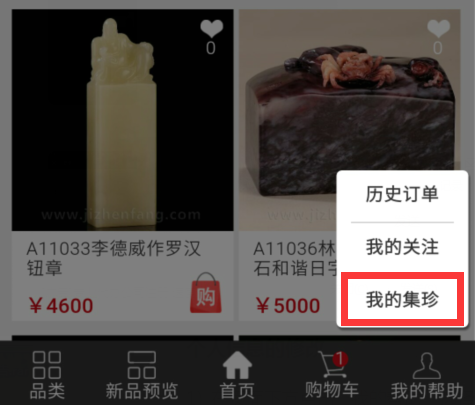
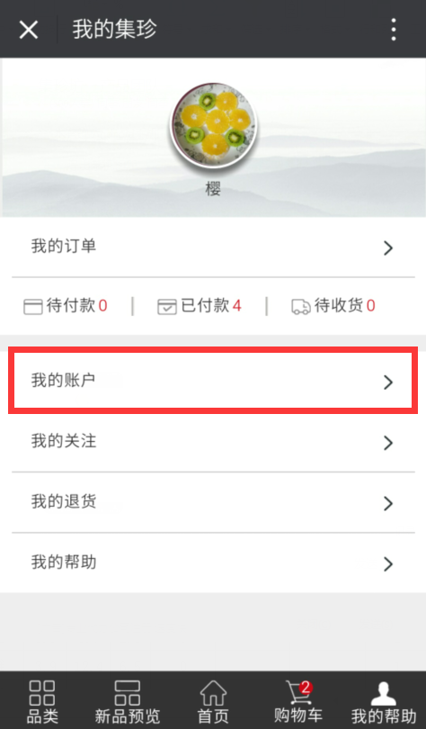
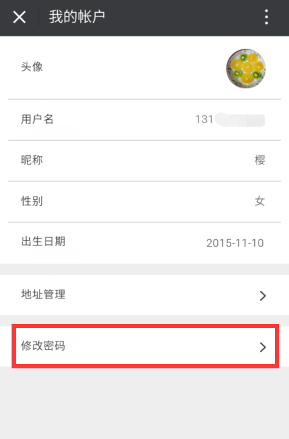
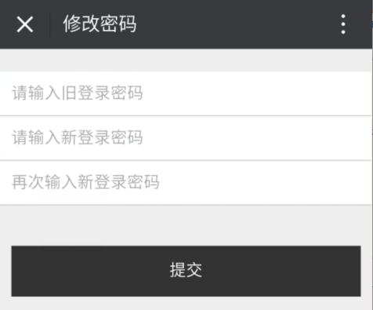
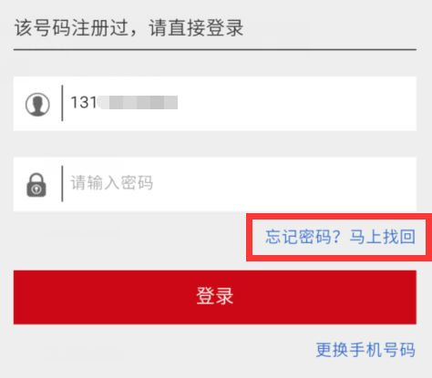
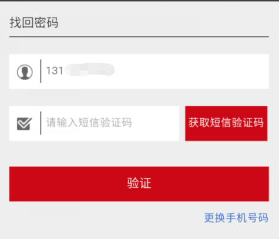
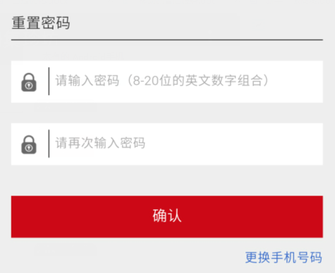

登录密码的修改 1、修改登录密码 1) 在页面下方点击“我的帮助”选择“我的集珍”进入用户中心页面  2）点击“我的账户”，进入“我的账户”页面  3）在“我的账户”页面点击“修改密码”进入“修改密码”页面进行密码修改  4）在修改密码页面，输入原密码和新密码即可完成登录密码的修改  2、登录密码的找回 1) 登录账号时忘记密码，点击“忘记密码”  2) 点击“获取短信验证码”获取并输入验证码  3）重新设置密码点击“确认”即可完成登录密码的找回 